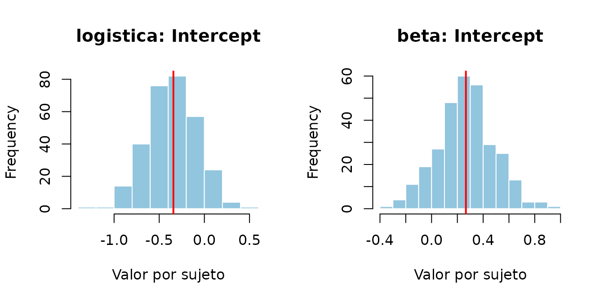
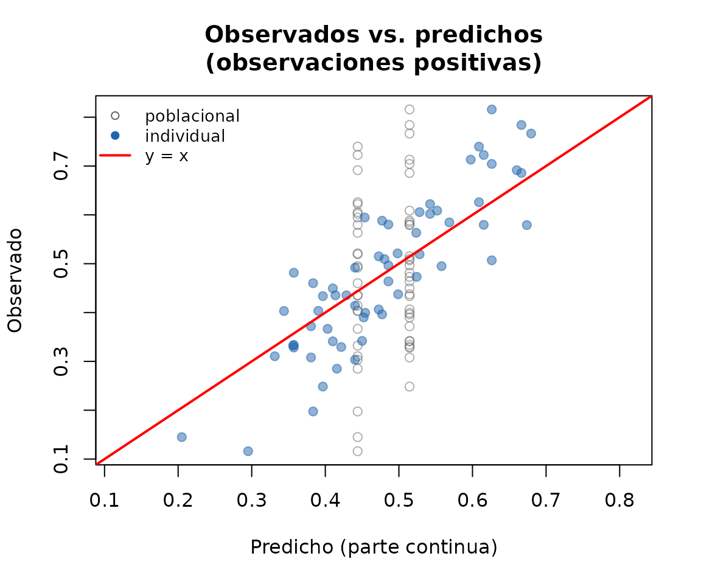
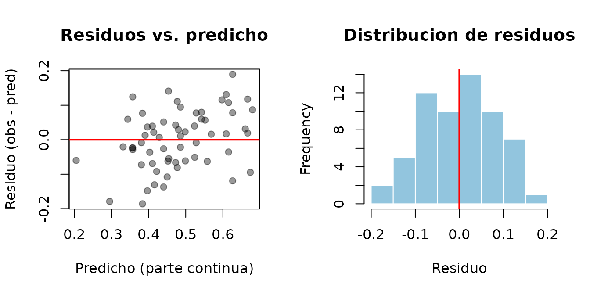

Que problema resuelve este paquete
Los datos de microbioma longitudinal (varias muestras por sujeto a lo largo del tiempo) suelen tener dos caracteristicas que los modelos mixtos estandar no manejan bien:
- Inflacion de ceros: muchos taxones estan ausentes en una fraccion grande de las muestras, ademas de tener una distribucion continua condicional a estar presentes.
- Dependencia entre observaciones del mismo sujeto: hay que modelar un efecto aleatorio por sujeto, no solo efectos fijos.
saemMicrobiome ofrece dos modelos para este problema,
ambos estimados con el algoritmo Stochastic Approximation EM (SAEM)
desarrollado por John Barrera:
-
ZIBR (
fit_zibr()): para cuando la respuesta es una proporcion (por ejemplo, abundancia relativa de un taxon respecto al total de la muestra), en el intervalo[0, 1). -
ZIBBMR (
fit_zibbmr()): para cuando la respuesta es un conteo (numero de lecturas del taxon) junto con el total de lecturas de la muestra (profundidad de secuenciacion). Es preferible a ZIBR cuando la profundidad de secuenciacion varia mucho entre muestras, porque modela esa variacion explicitamente en vez de solo trabajar con la proporcion ya normalizada.
Simular datos y ajustar un modelo ZIBR
# Solo hace falta cambiar n_subjects / n_time; n_obs se deriva de ellos.
n_subjects <- 30
n_time <- 4
n_obs <- n_subjects * n_time
set.seed(1)
dat <- simulate_zibr_data(
n_subjects = n_subjects, n_time = n_time,
X = matrix(rbinom(n_obs, 1, 0.5)), Z = matrix(rbinom(n_obs, 1, 0.5)),
alpha = c(-0.3, 0.5), beta = c(0.2, -0.4),
sigma_alpha = 0.4, sigma_beta = 0.3, phi = 15, seed = 1
)
head(dat)
#> Subject Time Y X.1 Z.1
#> 1 Subject.1 1 0.0000000 0 1
#> 2 Subject.1 2 0.0000000 0 0
#> 3 Subject.1 3 0.0000000 1 0
#> 4 Subject.1 4 0.3419259 1 0
#> 5 Subject.2 1 0.0000000 0 1
#> 6 Subject.2 2 0.5880479 1 0
fit <- fit_zibr(
y = dat$Y, id = dat$Subject, X = dat$X.1, Z = dat$Z.1,
phi_start = 10, alpha_start = c(-0.2, 0.1), beta_start = c(0.1, 0.1),
n_iter = 100, seed = 1, compute_fim = TRUE
)
fit
#> ===== Resultados SAEM-ZIBR =====
#> == Parte logistica: p_it ==
#> Estimate Type
#> Intercept 0.009898927 Random
#> X.1 0.101047754 Fixed
#> == Parte beta: u_it ==
#> Estimate Type
#> Intercept 0.05792314 Random
#> Z.1 -0.28304003 Fixed
#> === Varianzas de efectos aleatorios ===
#> == Parte logistica ==
#> Variance sqrt.Var
#> Intercept 0.09888517 0.3144601
#> == Parte beta ==
#> Variance sqrt.Var
#> Intercept 0.2673807 0.5170887
#> === Phi: 22.66785
#> === Log-verosimilitud marginal (importance sampling): -48.69255El objeto devuelto tiene metodos estandar de R para modelos ajustados:
coef(fit)
#> [1] 0.009898927 0.101047754 0.057923135 -0.283040031
logLik(fit)
#> 'log Lik.' -48.69255 (df=7)
se(fit)
#> [1] 0.2058814 0.3469675 0.1631279 0.2155122 6.0893936 0.1129842 0.1250804El metodo plot() ofrece varios graficos segun el
argumento which: convergencia del algoritmo, coeficientes
con intervalo de confianza, y distribucion de los efectos
aleatorios.
plot(fit, which = "convergencia") # traza del algoritmo (por defecto)
plot(fit, which = "coeficientes") # coeficientes con IC 95%
plot(fit, which = "aleatorios") # efectos aleatorios por sujeto
Tambien hay graficos de diagnostico del ajuste: observados vs. predichos y residuos (de la parte continua, en las observaciones donde el taxon esta presente).
plot(fit, which = "ajuste") # observados vs. predichos
plot(fit, which = "residuos") # residuos
El mismo flujo para ZIBBMR (conteos)
Cuando se tiene el conteo de lecturas y el total de lecturas por
muestra, fit_zibbmr() modela directamente esa informacion
con una verosimilitud beta-binomial, en vez de trabajar con la
proporcion ya dividida:
# Reutiliza n_subjects / n_time / n_obs del ejemplo anterior.
S <- rep(1000, n_obs)
dat_counts <- simulate_zibbmr_data(
n_subjects = n_subjects, n_time = n_time, S = S,
X = matrix(rbinom(n_obs, 1, 0.5)), Z = matrix(rbinom(n_obs, 1, 0.5)),
alpha = c(-0.3, 0.5), beta = c(0.2, -0.4),
sigma_alpha = 0.4, sigma_beta = 0.3, phi = 15, seed = 1
)
fit_counts <- fit_zibbmr(
y = dat_counts$Y, S = dat_counts$TotalCounts, id = dat_counts$Subject,
X = dat_counts$X.1, Z = dat_counts$Z.1,
phi_start = 10, alpha_start = c(-0.2, 0.1), beta_start = c(0.1, 0.1),
n_iter = 100, seed = 1, compute_fim = FALSE
)
fit_counts
#> ===== Resultados SAEM-ZIBBMR =====
#> == Parte logistica: p_it ==
#> Estimate Type
#> Intercept 0.01232391 Random
#> X.1 0.16159293 Fixed
#> == Parte beta-binomial: u_it ==
#> Estimate Type
#> Intercept 0.1988194 Random
#> Z.1 -0.5146478 Fixed
#> === Varianzas de efectos aleatorios ===
#> == Parte logistica ==
#> Variance sqrt.Var
#> Intercept 0.01775188 0.1332362
#> == Parte beta-binomial ==
#> Variance sqrt.Var
#> Intercept 0.06562225 0.2561684
#> === Phi: 24.4826
#> === Log-verosimilitud marginal (importance sampling): -464.5139Ajustar varios taxones de un data frame
En la practica los datos vienen como un data frame ancho (una columna
por taxon).
fit_zibr_taxon()/fit_zibbmr_taxon() evitan
tener que armar a mano las matrices X/Z para
cada taxon, y fit_zibr_taxa()/
fit_zibbmr_taxa() permiten ajustar varios taxones de una
vez:
sim <- simular_datos_microbioma(n_ind = 15, n_time = 4, n_taxa = 3, seed = 1)
head(sim$proporcion)
#> id tiempo grupo N Taxon1 Taxon2 Taxon3
#> 1 1 1 0 1000 0.057 0.495 0.448
#> 2 1 2 0 1000 0.207 0.581 0.212
#> 3 1 3 0 1000 0.143 0.654 0.203
#> 4 1 4 0 1000 0.177 0.558 0.265
#> 5 2 1 1 1000 0.533 0.188 0.279
#> 6 2 2 1 1000 0.138 0.214 0.648
fits <- fit_zibr_taxa(
data = sim$proporcion, taxa = sim$taxa, id = "id",
covariates = c("tiempo", "grupo"), n_iter = 50, seed = 1
)
sapply(fits, coef)
#> Taxon1 Taxon2 Taxon3
#> [1,] 0.05587996 0.13111349 -0.0423997
#> [2,] 20.24932804 19.57832672 21.0280064
#> [3,] 3.06101238 3.01938273 3.1301032
#> [4,] -0.63237382 -0.39258341 -0.3906250
#> [5,] 0.01704677 -0.08132268 -0.1669231
#> [6,] 0.03324854 -0.18405358 0.0821391Comparar modelos anidados con una prueba de razon de verosimilitudes
Para decidir si una covariable aporta significativamente, se compara
un modelo completo contra uno reducido (sin esa covariable) con
lrt_zibr()/ lrt_zibbmr():
full <- fit_zibr_taxon(
data = sim$proporcion, taxon = "Taxon1", id = "id",
covariates = c("tiempo", "grupo"), n_iter = 50, seed = 1
)
reduced <- fit_zibr_taxon(
data = sim$proporcion, taxon = "Taxon1", id = "id",
covariates = "tiempo", n_iter = 50, seed = 1
)
lrt_zibr(full, reduced, df = 1)
#> LL_full LL_reduced LRT df p_value
#> 1 14.64046 12.90933 3.462263 1 0.06278431Para muchos taxones a la vez,
lrt_zibr_table()/lrt_zibbmr_table() arman una
tabla con una fila por taxon.
La funcion “madre”: fit_saem_microbiome()
Si se prefiere no elegir entre
fit_zibr()/fit_zibbmr() explicitamente,
fit_saem_microbiome() (alias de
ajustar_modelo_microbioma()) despacha al modelo correcto
segun el argumento modelo, tomando la respuesta, el total
de lecturas (si aplica) y las covariables directamente de un data frame
por nombre de columna:
fit_saem_microbiome(
modelo = "zibr", datos = sim$proporcion, taxon = "Taxon1",
id = "id", covariables = c("tiempo", "grupo"), iter = 50, seed = 1
)
#> ===== Resultados SAEM-ZIBR =====
#> == Parte logistica: p_it ==
#> Estimate Type
#> Intercept 0.05587996 Random
#> tiempo 20.24932804 Fixed
#> grupo 3.06101238 Fixed
#> == Parte beta: u_it ==
#> Estimate Type
#> Intercept -0.63237382 Random
#> tiempo 0.01704677 Fixed
#> grupo 0.03324854 Fixed
#> === Varianzas de efectos aleatorios ===
#> == Parte logistica ==
#> Variance sqrt.Var
#> Intercept 0.003020215 0.05495648
#> == Parte beta ==
#> Variance sqrt.Var
#> Intercept 0.004971694 0.07051024
#> === Phi: 3.987447
#> === Log-verosimilitud marginal (importance sampling): 14.64046Datos propios: preparar un dataset tipo Romero
Si los datos vienen en el formato del estudio Romero (una lista con
SampleData y OTU),
prepare_romero_zibr()/prepare_romero_zibbmr()
arman las covariables estandar (tiempo de gestacion escalado, edad
escalada, interaccion tiempo-embarazo) y filtran taxones por proporcion
de ceros, dejando todo listo para
fit_zibr_taxon()/fit_zibbmr_taxon(). Ver
?prepare_romero_zibr para el formato esperado de
SampleData/OTU.